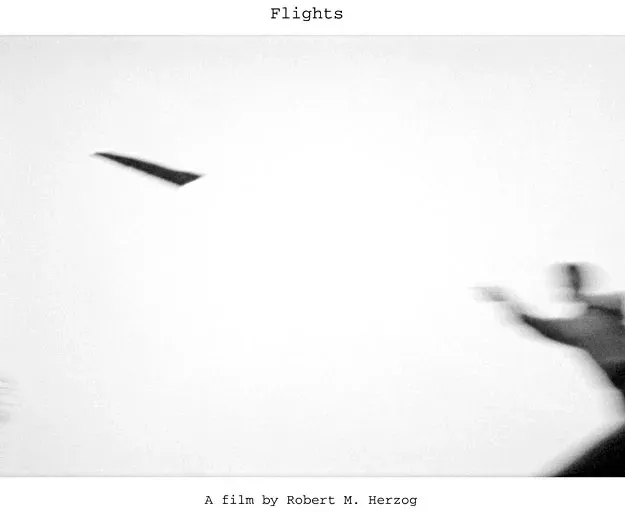

Short film
Flights
A film by Robert M. Herzog. Director’s statement, screening history and review.
Director’s Statement
I wanted to capture a unique, turbulent, strange, wonderful era in American history, when ordinary events were wrapped in extraordinary circumstances. It wasn’t as if we grew up saying, “Hey, let’s do the Sixties.” The culture, the questions, the pressures, the antics, the lives evolved, each step taking us further away, however briefly, from what came before, separating us, often permanently, from what came later.
Flights’ central character, Fong, makes a decision which puts him on a course where he fights not just to survive but to flourish, and where his hopes to transcend the past are confounded by the dangers and attachments of his present. As Fong says, “Shouldn’t living be connected to what you want, not just avoiding what you didn’t?”
Not everybody in the Sixties went to Woodstock, or the Chicago Convention. Some sought to avoid the tumultuous confrontations with government, society, and culture. But many engaged in a process to re-state authority, redefine society, and energize culture. They worked in programs and positions trying to integrate a different set of values into entrenched institutions. They were often shut out, dismissed, pushed down, but they were young and committed, bristling with passion and need. For a brief period they had an extraordinary impact. Whatever one’s decisions then, they affected you profoundly, and for the rest of your life.
I also wanted to give people the sense of what the real consequences are when the country makes its greatest demand on people who aren’t buying it, but who are overwhelmed by what they are confronting.
What astonishes me now, looking back on when we energized or confronted misguided American military action, nascent feminism, emerging environmentalism, committed activism and deep-seated racism, is how many issues we thought would be resolved still remain. The great inertia of the mass of America has suppressed those spikes of energy and hope. We live again in a time of war, but a volunteer army allows us to take much of its impact for granted. Racism thrives, and poverty flourishes while ever more wealth is transferred to ever fewer people. It’s like the revenge of the people who didn’t engage with the changes of the Sixties, but were just angry about them.
Attention should be paid. Flights, and the novel it is excerpted from, Not Our Fathers’ Dreams, are my way of trying to generate it.

Flights: Screening History and Awards
• Hamptons International Film Festival, New York
• Los Angeles International Short Film Festival (LA Shorts Fest), California
• Best Film Short Subject -- Cinevue International Film Competition, Florida
• Ohio Independent Film Festival, Ohio
• IFP Buzz Cuts sponsored by Sundance Channel, New York City
• Global Peace Film Festival, Florida
• Williamstown Film Festival, Massachusetts
• Le Festival Internationnal du Film de Vol Libre, France
• Milwaukee International Film Festival, Wisconsin
• Annapolis Film Festival, Maryland
• daVinci Film and Video Festival, Oregon
• Gainesville Music and Film Festival, Florida
• Substream International Film Festival, Florida
Review of Flights from the LA Shorts Fest
Based on the director/writer’s novel Not Our Father’s Dream, this short film captures the essence of how an ordinary evening at a Williams College dorm in 1968 turns into a night of discovery. Bypassing savage imagery, Herzog’s film glides into our psyches with an uncertain quietness, reminiscent of screenwriter Robert Towne’s approach. It’s during Flights‘ rooftop sequence that it really takes off (pun intended). Picturing a defining moment is no easy task, but Herzog manages to paint a tableau of that time that rings true using little more than paper airplanes, matches, and, of course, talent. None of Peckinpah’s fireworks or Coppola’s sturm and drang — just an insider’s view of a time that all-too-readily reminds us of today.
Fong, his main character says, “Shouldn’t living be connected to what you want, not just avoiding what you didn’t? It’s this ‘Fongosophy’ and depth beyond the words on paper or the scenes on the screen that leave us wanting more from this emerging filmmaker. This effervescent study of conflict between what the writer terms citizenship and morality could not be more timely. Herzog says that the film captures “an almost true, but entirely surreal experience”. It’s only in the canvas of long-form that we’ll see if Herzog lives up to his potential. Flights is featured in the Hampton International Film Festival’s Conflict and Resolution section and was named “best film short subject” Cinevue International Film Competition, Florida.
— Joyce Schwarz, FilmFestivals.com